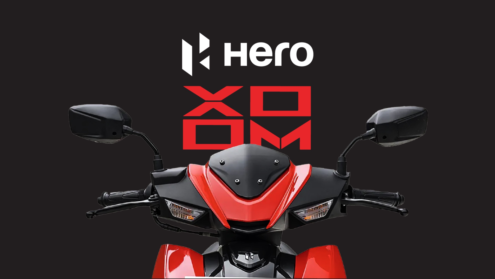

Hero XOOM
The brief was a scooter launch. The question was: which version of this campaign do you lead with? So we made three. One drops the scooter into a Squid Game arena and turns every street into a survival game. One goes full 8-bit — Pac-Man, but you're the one doing the eating. One is built around a tagline simple enough to live on a billboard and sticky enough to survive the client meeting. Three different worlds, one brief.
Campaign · 2024 View deck